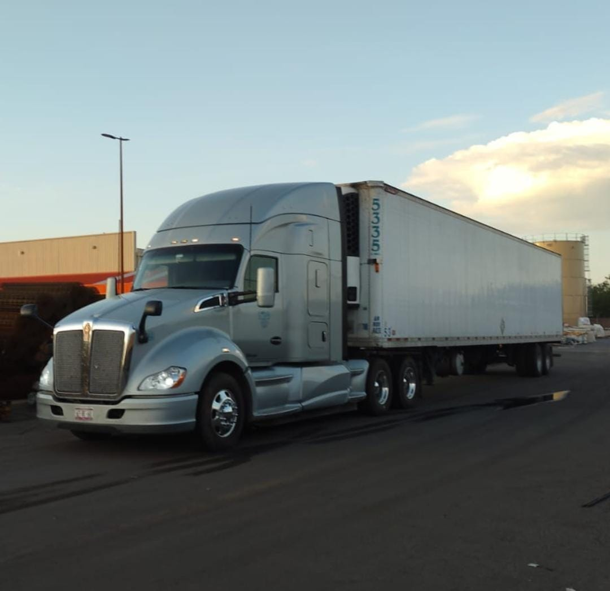
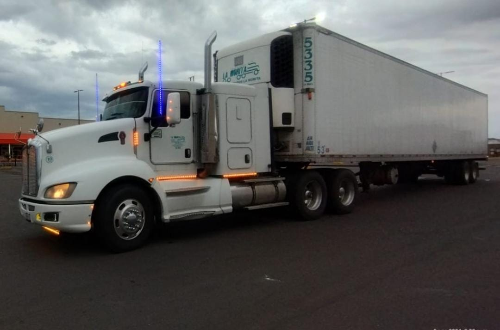

En un mundo donde la globalización y el comercio internacional están en constante crecimiento, contar con un servicio de transporte de largo recorrido confiable se ha convertido en una necesidad esencial para las empresas de todos los tamaños. En la empresa MORITA RAMSA , entendemos que cada carga es única y que cada trayecto puede presentar desafíos específicos. Por eso, nos especializamos en ofrecer soluciones de transporte a largo plazo que combinan confiabilidad, seguridad y eficiencia para garantizar que sus productos lleguen a su destino de manera puntual y en perfectas condiciones.
 En la Empresa MORITA REMSA, nos enorgullece ofrecer un servicio de transporte nacional que abarca cada rincón de México. Con años de experiencia en el sector y una flota de vehículos moderna y bien mantenida, estamos comprometidos a proporcionar soluciones de transporte que cumplen con los más altos estándares de calidad y eficiencia. Ya sea que necesite enviar mercancías desde la vibrante Ciudad de México hasta los rincones más remotos de Chiapas, o desde la soleada Baja California hasta las tierras altas de San Luis Potosí, nuestro equipo está preparado para manejar sus necesidades de transporte con profesionalismo y fiabilidad.
Descripción del Puesto:
Estamos buscando un soldador con experiencia para trabajar en la fabricación y reparación de estructuras metálicas. El candidato debe tener habilidades en diversas técnicas de soldadura y un enfoque meticuloso en la calidad del trabajo.
Requisitos:
- Experiencia mínima de 2 años en soldadura industrial.
- Conocimiento en diferentes técnicas de soldadura (MIG, TIG, ARC).
- Capacidad para leer e interpretar planos técnicos.
- Certificaciones en soldadura son una ventaja.
Descripción del Puesto:
Necesitamos un ayudante de oficina organizado y proactivo para apoyar en tareas administrativas y operativas diarias. El candidato ideal debe tener buenas habilidades de comunicación y un enfoque orientado al detalle.
Requisitos:
- Experiencia previa en un rol administrativo o de oficina.
- Habilidad para manejar múltiples tareas y organizar el trabajo.
- Conocimientos básicos en programas de oficina (Word, Excel, etc.).
- Actitud positiva y habilidades de trabajo en equipo.
En La Morita REMSA, valoramos el desarrollo profesional y personal de nuestros empleados. Si estás actualmente estudiando y te interesa alguna de estas posiciones, no te preocupes: ofrecemos flexibilidad para que puedas equilibrar tus estudios con el trabajo. Además, brindamos apoyo adicional para ayudarte a alcanzar tus objetivos académicos mientras adquieres experiencia práctica en el campo.
cumples con los Requisitos y te interesa
ddscssdPara contractar nuestos servicios no dudes en ponerte en contacto con nosotros.